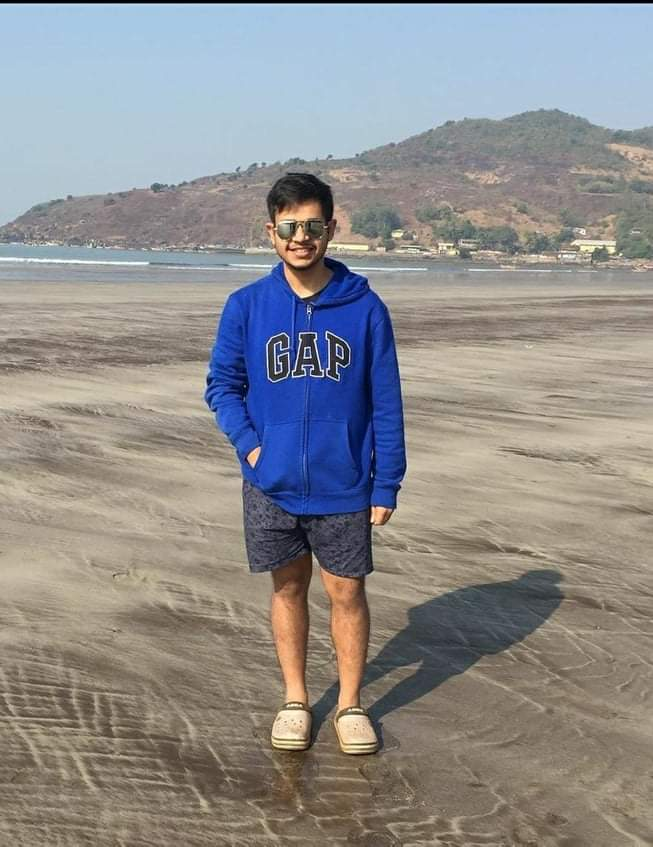

Hello I hope I am finding you in good health.
I am Rohan Bansal, a Fourth year B.Tech student from Electrical Engineering Department. Of the last five months of cursing the COVID, I spent two months working as a Data Science intern at Honeywell. I am a Machine Learning enthusiast and I am going to discuss how I got an ML intern and other sweet-bitter experiences.

The Internship season
After spending a month at home, I joyfully came back to insti only to find a mountain to climb. After finally making a decent looking resume, I sat down and thought about the kind of internship I'd want to do. I wasn't into consultancy and finance so I decided to let go of such interns which usually arrived in the initial weeks. I also didn't want a research intern because I wanted to get a company/corporate experience. So I waited for the ML/AI related internships to come in.
I signed some JAF's - Microsoft, Sony, Adobe but didn't get shortlisted. Honeywell came in looking for data science interns and I signed it. The shortlisting was done on the basis of a basic Machine Learning theoretical test score. The shortlisted candidates sat through two interviews - Technical and HR. The technical interview consisted of questions about your Resume projects, basic Machine Learning questions and a few based on python language. I would recommend that one should go through their Resume Projects and other technical skills in a rigorous manner. My machine learning projects and good overall knowledge helped me ace the technical interview. For the HR interview, I would recommend preparing answers to some conventional questions beforehand. This helps in boosting your confidence and posing a better impression on the interviewer.
Work Experience and Learnings
I was excited about spending two months in Bangalore as this was my first internship and also I would get a chance to live a different city life. But CORONA happened!!!! So we were unsure about how and when the internship would take place. Honeywell insisted on an onsite internship hoping the situation would improve. But it worsened, so we had to settle for a Work from home internship. So finally, the internship commenced on June 1. The company sent us laptops so that we could access Honeywell internal data and necessary softwares.
I worked on two projects : ERP Migration and Product Classification. Both the projects leveraged Natural Language Processing techniques to train the models. ERP Migration focused on organising new data into Honeywell convention while Product Classification focused on classifying new product data into a globally used taxonomy.
Honeywell had a specialised data science workbench with large GPUs to run the models. I was part of a 16 member team of interns and employees from the USA, China and India. To accommodate for the time zone differences, we had our daily meetings in the evening. Work hours were quite flexible, you could do your work anytime you felt like. I was appointed two mentors, to aid me if at any step I got stuck. They were very supporting and cooperative and always kept an open mind while discussing my ideas. I expected WFH to be a dull scenario but it turned out to be more than fine. Company provided us with all the necessary IT support, so it wasn't any trouble getting set up. I didn't experience any connectivity problems apart from some minor VPN connectivity issues, which were resolved quickly. In the Machine learning profile, I didn't feel any differences in the technical part but communication does take a hit. So overall my WFH experience was a quiet smooth one. Still I wish I could have worked onsite, as I would have gotten a chance to meet the team, know more about them and discuss things other than the internship work. I would have experienced first hand, how a day goes by in the IT sector. WFH does give you a sort of freedom but onsite internship would have been a more enriching experience.
My major takeaways and learnings:-
A Few words to Juniors
One experiences a flurry of emotions during the internship season - anxiety, excitement etc. It is important to get hold of these emotions and stay focused. Here are some fundae that may help in easing your selection process.